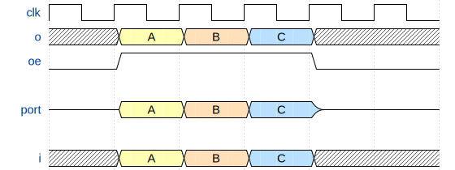
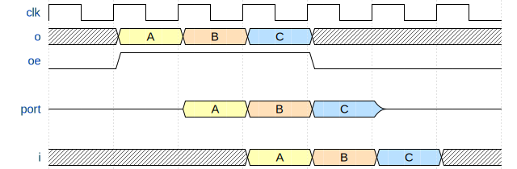

Input/output buffers
The amaranth.lib.io module provides a platform-independent way to instantiate platform-specific input/output buffers: combinational, synchronous, and double data rate (DDR).
Introduction
The Amaranth language provides core I/O values that designate connections to external devices, and I/O buffer instances that implement platform-independent combinational I/O buffers. This low-level mechanism is foundational to all I/O in Amaranth and must be used whenever a device-specific platform is unavailable, but is limited in its capabilities. The amaranth.lib.io module builds on top of it to provide library I/O ports that specialize and annotate I/O values, and buffer components that connect ports to logic.
Note
Unfortunately, the terminology related to I/O has several ambiguities:
A “port” could refer to an interface port (
Signalobjects created by theamaranth.lib.wiringmodule), a core I/O port (amaranth.hdl.IOPortobject), or a library I/O port (amaranth.lib.io.PortLikeobject).A “I/O buffer” could refer to an I/O buffer instance (
amaranth.hdl.IOBufferInstance) or a I/O buffer component (amaranth.lib.io.Buffer,FFBuffer, orDDRBufferobjects).
Amaranth documentation always uses the least ambiguous form of these terms.
Examples
All of the following examples assume that one of the built-in FPGA platforms is used.
from amaranth.sim import Simulator, Period
from amaranth.lib import io, wiring, stream
from amaranth.lib.wiring import In, Out
LED output
In this example, a library I/O port for a LED is requested from the platform and driven to blink the LED:
class Toplevel(Elaboratable):
def elaborate(self, platform):
m = Module()
delay = Signal(24)
state = Signal()
with m.If(delay == 0):
m.d.sync += delay.eq(~0)
m.d.sync += state.eq(~state)
with m.Else():
m.d.sync += delay.eq(delay - 1)
m.submodules.led = led = io.Buffer("o", platform.request("led", dir="-"))
m.d.comb += led.o.eq(state)
return m
Clock input
In this example, a clock domain is created and driven from an external clock source:
class Toplevel(Elaboratable):
def elaborate(self, platform):
m = Module()
m.domains.sync = cd_sync = ClockDomain()
m.submodules.clk24 = clk24 = io.Buffer("i", platform.request("clk24", dir="-"))
m.d.comb += cd_sync.clk.eq(clk24.i)
...
return m
Bidirectional bus
This example implements a peripheral for a clocked parallel bus. This peripheral can store and recall one byte of data. The data is stored with a write enable pulse, and recalled with a read enable pulse:
class Toplevel(Elaboratable):
def elaborate(self, platform):
m = Module()
m.submodules.bus_d = bus_d = io.FFBuffer("io", platform.request("d", dir="-"))
m.submodules.bus_re = bus_re = io.Buffer("i", platform.request("re", dir="-"))
m.submodules.bus_we = bus_we = io.Buffer("i", platform.request("we", dir="-"))
data = Signal.like(bus_d.i)
with m.If(bus_re.i):
m.d.comb += bus_d.oe.eq(1)
m.d.comb += bus_d.o.eq(data)
with m.Elif(bus_we.i):
m.d.sync += data.eq(bus_d.i)
return m
This bus requires a turn-around time of at least 1 cycle to avoid electrical contention.
Note that data appears on the bus one cycle after the read enable input is asserted, and that the write enable input stores the data present on the bus in the previous cycle. This is called pipelining and is typical for clocked buses; see FFBuffer for a waveform diagram. Although it increases the maximum clock frequency at which the bus can run, it also makes the bus signaling more complicated.
Clock forwarding
In this example of a source-synchronous interface, a clock signal is generated with the same phase as the DDR data signals associated with it:
class SourceSynchronousOutput(wiring.Component):
dout: In(16)
def elaborate(self, platform):
m = Module()
m.submodules.bus_dclk = bus_dclk = \
io.DDRBuffer("o", platform.request("dclk", dir="-"))
m.d.comb += [
bus_dclk.o[0].eq(1),
bus_dclk.o[1].eq(0),
]
m.submodules.bus_dout = bus_dout = \
io.DDRBuffer("o", platform.request("dout", dir="-"))
m.d.comb += [
bus_dout.o[0].eq(self.dout[:8]),
bus_dout.o[1].eq(self.dout[8:]),
]
return m
This component transmits dout on each cycle as two halves: the low 8 bits on the rising edge of the data clock, and the high 8 bits on the falling edge of the data clock. The transmission is edge-aligned, meaning that the data edges exactly coincide with the clock edges.
Simulation
The Amaranth simulator, amaranth.sim, cannot simulate core I/O values or I/O buffer instances as it only operates on unidirectionally driven two-state wires. This module provides a simulation-only library I/O port, SimulationPort, so that components that use library I/O buffers can be tested.
A component that is designed for testing should accept the library I/O ports it will drive as constructor parameters rather than requesting them from the platform directly. Synthesizable designs will instantiate the component with a SingleEndedPort, DifferentialPort, or a platform-specific library I/O port, while tests will instantiate the component with a SimulationPort. Tests are able to inject inputs into the component using sim_port.i, capture the outputs of the component via sim_port.o, and ensure that the component is driving the outputs at the appropriate times using sim_port.oe.
For example, consider a simple serializer that accepts a stream of multi-bit data words and outputs them bit by bit. It can be tested as follows:
class OutputSerializer(wiring.Component):
data: In(stream.Signature(8))
def __init__(self, dclk_port, dout_port):
self.dclk_port = dclk_port
self.dout_port = dout_port
super().__init__()
def elaborate(self, platform):
m = Module()
m.submodules.dclk = dclk = io.Buffer("o", self.dclk_port)
m.submodules.dout = dout = io.Buffer("o", self.dout_port)
index = Signal(range(8))
m.d.comb += dout.o.eq(self.data.payload.bit_select(index, 1))
with m.If(self.data.valid):
m.d.sync += dclk.o.eq(~dclk.o)
with m.If(dclk.o):
m.d.sync += index.eq(index + 1)
with m.If(index == 7):
m.d.comb += self.data.ready.eq(1)
return m
def test_output_serializer():
dclk_port = io.SimulationPort("o", 1)
dout_port = io.SimulationPort("o", 1)
dut = OutputSerializer(dclk_port, dout_port)
async def testbench_write_data(ctx):
ctx.set(dut.data.payload, 0xA1)
ctx.set(dut.data.valid, 1)
await ctx.tick().until(dut.data.ready)
ctx.set(dut.data.valid, 0)
async def testbench_sample_output(ctx):
for bit in [1,0,0,0,0,1,0,1]:
_, dout_value = await ctx.posedge(dut.dclk_port.o).sample(dut.dout_port.o)
assert ctx.get(dut.dout_port.oe) == 1, "DUT is not driving the data output"
assert dout_value == bit, "DUT drives the wrong value on data output"
sim = Simulator(dut)
sim.add_clock(Period(MHz=1))
sim.add_testbench(testbench_write_data)
sim.add_testbench(testbench_sample_output)
sim.run()
Ports
- class amaranth.lib.io.Direction
Represents direction of a library I/O port, or of an I/O buffer component.
- Input = 'i'
Input direction (from outside world to Amaranth design).
- Output = 'o'
Output direction (from Amaranth design to outside world).
- Bidir = 'io'
Bidirectional (can be switched between input and output).
- __and__(other)
Narrow the set of possible directions.
self & selfreturnsself.Bidir & otherreturnsother.Input & OutputraisesValueError.
- class amaranth.lib.io.PortLike
Represents an abstract library I/O port that can be passed to a buffer.
The port types supported by most platforms are
SingleEndedPortandDifferentialPort. Platforms may define additional port types where appropriate.Note
amaranth.hdl.IOPortis not an instance ofamaranth.lib.io.PortLike.- abstract __len__()
Computes the width of the port.
- Returns:
The number of wires (for single-ended library I/O ports) or wire pairs (for differential library I/O ports) this port consists of.
- Return type:
- abstract __getitem__(key)
Slices the port.
- abstract __invert__()
Inverts polarity of the port.
Inverting polarity of a library I/O port has the same effect as adding inverters to the
iandomembers of an I/O buffer component for that port.
- abstract __add__(other)
Concatenates two library I/O ports of the same type.
The direction of the resulting port is:
The same as the direction of both, if the two ports have the same direction.
Direction.Inputif a bidirectional port is concatenated with an input port.Direction.Outputif a bidirectional port is concatenated with an output port.
- Returns:
A new
type(self)which contains wires fromselffollowed by wires fromother, preserving their polarity inversion.- Return type:
type(self)- Raises:
ValueError – If an input port is concatenated with an output port.
TypeError – If
selfandotherhave different types.
- class amaranth.lib.io.SingleEndedPort(io, *, invert=False, direction=Direction.Bidir)
Represents a single-ended library I/O port.
Implements the
PortLikeinterface.- Parameters:
io (
IOValue) – Underlying core I/O value.invert (
boolor iterable ofbool) – Polarity inversion. If the value is a simplebool, it specifies inversion for the entire port. If the value is an iterable ofbool, the iterable must have the same length as the width ofio, and the inversion is specified for individual wires.direction (
Directionorstr) – Set of allowed buffer directions. A string is converted to aDirectionfirst. If equal toInputorOutput, this port can only be used with buffers of matching direction. If equal toBidir, this port can be used with buffers of any direction.
- Attributes:
- class amaranth.lib.io.DifferentialPort(p, n, *, invert=False, direction=Direction.Bidir)
Represents a differential library I/O port.
Implements the
PortLikeinterface.- Parameters:
p (
IOValue) – Underlying core I/O value for the true (positive) half of the port.n (
IOValue) – Underlying core I/O value for the complement (negative) half of the port. Must have the same width asp.invert (
boolor iterable ofbool) – Polarity inversion. If the value is a simplebool, it specifies inversion for the entire port. If the value is an iterable ofbool, the iterable must have the same length as the width ofpandn, and the inversion is specified for individual wires.direction (
Directionorstr) – Set of allowed buffer directions. A string is converted to aDirectionfirst. If equal toInputorOutput, this port can only be used with buffers of matching direction. If equal toBidir, this port can be used with buffers of any direction.
- Attributes:
- class amaranth.lib.io.SimulationPort(direction, width, *, invert=False, name=None, src_loc_at=0)
Represents a simulation library I/O port.
Implements the
PortLikeinterface.- Parameters:
direction (
Directionorstr) – Set of allowed buffer directions. A string is converted to aDirectionfirst. If equal toInputorOutput, this port can only be used with buffers of matching direction. If equal toBidir, this port can be used with buffers of any direction.width (
int) – Width of the port. The width of each of the attributesi,o,oe(whenever present) equalswidth.invert (
boolor iterable ofbool) – Polarity inversion. If the value is a simplebool, it specifies inversion for the entire port. If the value is an iterable ofbool, the iterable must have the same length as the width ofpandn, and the inversion is specified for individual wires.name (
strorNone) – Name of the port. This name is only used to derive the names of the input, output, and output enable signals.src_loc_at (
int) – Source location. Used to infernameif not specified.
- Attributes:
i (
Signal) – Input signal. Present ifdirection in (Input, Bidir).o (
Signal) – Ouptut signal. Present ifdirection in (Output, Bidir).oe (
Signal) – Output enable signal. Present ifdirection in (Output, Bidir).invert (
tupleofbool) – Theinvertparameter, normalized to specify polarity inversion per-wire.direction (
Direction) – Thedirectionparameter, normalized to theDirectionenumeration.
Buffers
- class amaranth.lib.io.Buffer(direction, port)
A combinational I/O buffer component.
This buffer can be used on any platform; if the platform does not specialize its implementation, an I/O buffer instance is used.
The following diagram defines the timing relationship between the underlying core I/O value (for differential ports, the core I/O value of the true half) and the
i,o, andoemembers:- Parameters:
- Raises:
ValueError – Unless
port.direction in (direction, Bidir).- Attributes:
signature (
Buffer.Signature) –Signature(direction, len(port)).flip().
- class Signature(direction, width)
Signature of a combinational I/O buffer.
- Parameters:
- Members:
i (
In(width)) – Present ifdirection in (Input, Bidir).o (
Out(width)) – Present ifdirection in (Output, Bidir).oe (
Out(1, init=0)) – Present ifdirection is Bidir.oe (
Out(1, init=1)) – Present ifdirection is Output.
- class amaranth.lib.io.FFBuffer(direction, port, *, i_domain=None, o_domain=None)
A registered I/O buffer component.
This buffer can be used on any platform; if the platform does not specialize its implementation, an I/O buffer instance is used, combined with reset-less registers on
i,o, andoemembers.The following diagram defines the timing relationship between the underlying core I/O value (for differential ports, the core I/O value of the true half) and the
i,o, andoemembers:Warning
On some platforms, this buffer can only be used with rising edge clock domains, and will raise an exception during conversion of the design to a netlist otherwise.
This limitation will be lifted in the future.
- Parameters:
direction (
Direction) – Direction of the buffer.port (
PortLike) – Port driven by the buffer.i_domain (
str) – Name of the input register’s clock domain. Used whendirection in (Input, Bidir). Defaults to"sync".o_domain (
str) – Name of the output and output enable registers’ clock domain. Used whendirection in (Output, Bidir). Defaults to"sync".
- Attributes:
signature (
FFBuffer.Signature) –Signature(direction, len(port)).flip().
- class Signature(direction, width)
Signature of a registered I/O buffer.
- Parameters:
- Members:
i (
In(width)) – Present ifdirection in (Input, Bidir).o (
Out(width)) – Present ifdirection in (Output, Bidir).oe (
Out(1, init=0)) – Present ifdirection is Bidir.oe (
Out(1, init=1)) – Present ifdirection is Output.
- class amaranth.lib.io.DDRBuffer(direction, port, *, i_domain=None, o_domain=None)
A double data rate I/O buffer component.
This buffer is only available on platforms that support double data rate I/O.
The following diagram defines the timing relationship between the underlying core I/O value (for differential ports, the core I/O value of the true half) and the
i,o, andoemembers:![{'head': {'tick': 0}, 'signal': [{'name': 'clk', 'wave': 'p.......'}, {'name': 'o[0]', 'wave': 'x357x...', 'node': '.a', 'data': ['A', 'C', 'E']}, {'name': 'o[1]', 'wave': 'x468x...', 'node': '.b', 'data': ['B', 'D', 'F']}, {'name': 'oe', 'wave': '01..0...'}, {'node': '........R.S', 'period': 0.5}, {'name': 'port', 'wave': 'z...345678z.....', 'node': '....123456', 'data': ['A', 'B', 'C', 'D', 'E', 'F'], 'period': 0.5}, {'node': '..P.Q', 'period': 0.5}, {'name': 'i[0]', 'wave': 'x...468x', 'node': '.....d', 'data': ['B', 'D', 'F']}, {'name': 'i[1]', 'wave': 'x..357x.', 'node': '.....e', 'data': ['A', 'C', 'E']}], 'edge': ['a~1', 'b-~2', 'P+Q t1', '5~-d', '6~e', 'R+S t2'], 'config': {'hscale': 2, 'skin': 'default'}}](_images/io/ddr-buffer.svg)
The output data (labelled a, b) is input from
ointo internal registers at the beginning of clock cycle 2, and transmitted at points labelled 1, 2 during the same clock cycle. The output latency t1 is defined as the amount of cycles between the time of capture ofoand the time of transmission of rising edge data plus one cycle, and is 1 for this diagram.The received data is captured into internal registers during the clock cycle 4 at points labelled 5, 6, and output to
iduring the next clock cycle (labelled d, e). The input latency t2 is defined as the amount of cycles between the time of reception of rising edge data and the time of update ofi, and is 1 for this diagram.The output enable signal is input from
oeonce per cycle and affects the entire cycle it applies to. Its latency is defined in the same way as the output latency, and is equal to t1.Warning
Some platforms include additional pipeline registers that may cause latencies t1 and t2 to be higher than one cycle. At the moment there is no way to query these latencies.
This limitation will be lifted in the future.
Warning
On all supported platforms, this buffer can only be used with rising edge clock domains, and will raise an exception during conversion of the design to a netlist otherwise.
This limitation may be lifted in the future.
Warning
Double data rate I/O buffers are not compatible with
SimulationPort.This limitation may be lifted in the future.
- Parameters:
direction (
Direction) – Direction of the buffer.port (
PortLike) – Port driven by the buffer.i_domain (
str) – Name of the input register’s clock domain. Used whendirection in (Input, Bidir). Defaults to"sync".o_domain (
str) – Name of the output and output enable registers’ clock domain. Used whendirection in (Output, Bidir). Defaults to"sync".
- Attributes:
signature (
DDRBuffer.Signature) –Signature(direction, len(port)).flip().
- class Signature(direction, width)
Signature of a double data rate I/O buffer.
- Parameters:
- Members:
i (
In(ArrayLayout(width, 2))) – Present ifdirection in (Input, Bidir).o (
Out(ArrayLayout(width, 2))) – Present ifdirection in (Output, Bidir).oe (
Out(1, init=0)) – Present ifdirection is Bidir.oe (
Out(1, init=1)) – Present ifdirection is Output.